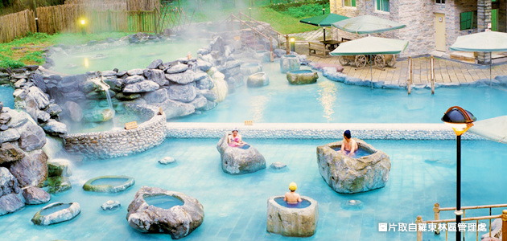
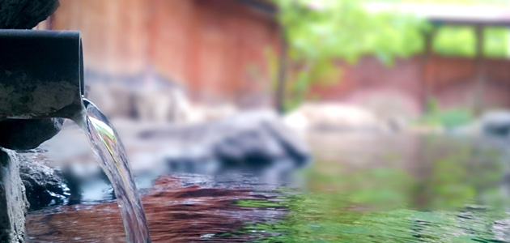
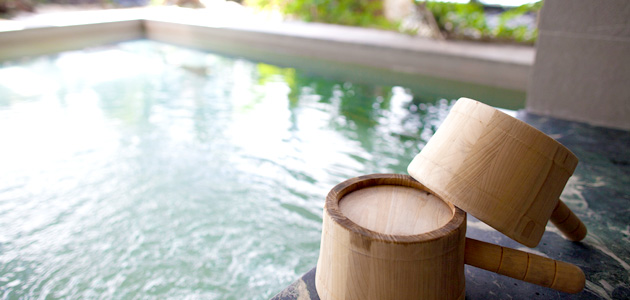

-
台版冰島藍湖 享受山林裡的一抹湛藍
太平山 鳩之澤
2020年10月重新開放的太平山鳩之澤溫泉，被群山圍繞的溫泉祕境將揭開神秘面紗，被譽為台版冰島藍湖的鳩之澤在陽光的反射下閃耀著湛藍的色澤，更以大塊岩石設計成石頭湯，彷彿隱世於深山裡的人間天堂，而鳩之澤還特別設置溫泉煮蛋槽，將蛋放入竹簍中於溫泉裡水煮就可以品嘗具有甜味的溫泉蛋囉！
 -
在寒冷的天氣泡湯乃是人生一大樂事
宜蘭礁溪溫泉
礁溪溫泉是台灣少見的平地溫泉，也是享譽全台的溫泉之一，每年還會舉辦溫泉節吸引眾多人潮朝聖，來到礁溪就千萬別錯過湯圍溝公園，自然湧出溫泉不斷冒出熱氣特別有氣氛，另外來到礁溪也別忘記入住溫泉飯店，私人湯屋還有優美風景總是讓人嚮往！
 -
日月潭最有名的溫泉 眺望日月星輝的完美時刻
雲品溫泉飯店
到日月潭泡湯不僅可以擁有好景色還可以擁有最完美的假期，而坐落於日月潭的五星級雲品溫泉酒店，擁有日月潭第一泉的稱號，雲品溫泉酒店提供211間客房，每間房間都有獨立的大理石浴池讓您可以享受溫泉時光，還有知名的煙嵐風呂溫泉，猶如神仙般的體驗，在泡湯之餘還可以擁抱日月潭周邊好山好水的美景。
